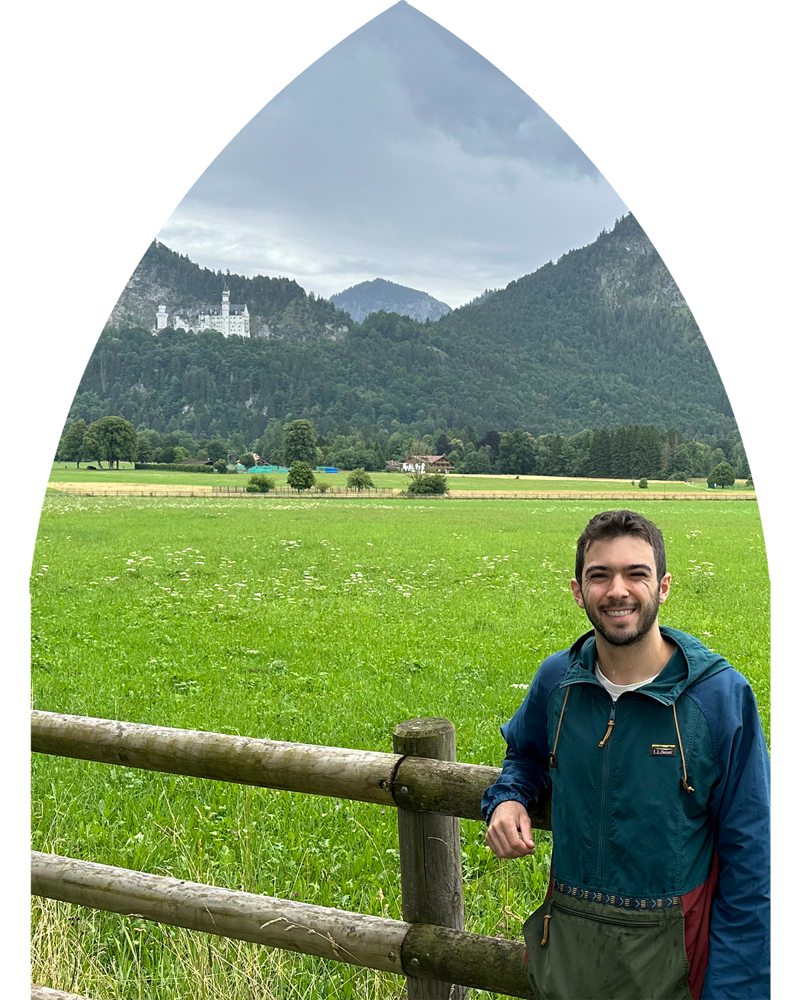

Home
Perrywinkle is a multimedia visionary art project I started back in 2020. The spirit of Perrywinkle is a fairy-tale like blend of the whimsical, the mystical, and the alien. It seeks to push boundaries through personal revelation and experimentation with new technologies.
On this website you will find greater context and clues for experiencing Perrywinkle projects, which hopefully still leave room for personal interpretation.
You can tune into Perrywinkle across various platforms with the linktree below:
